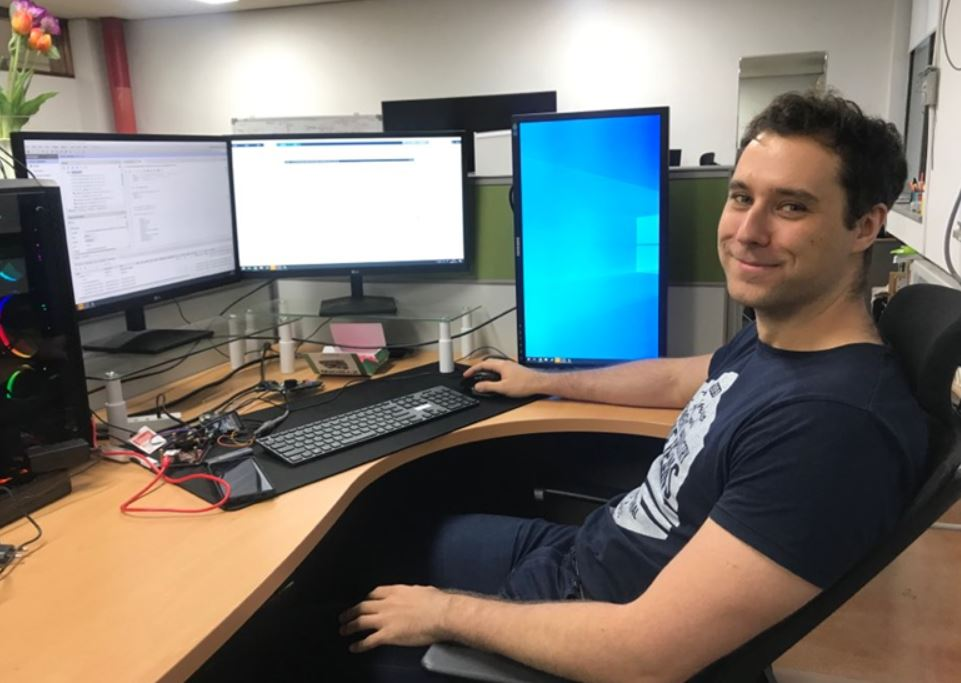
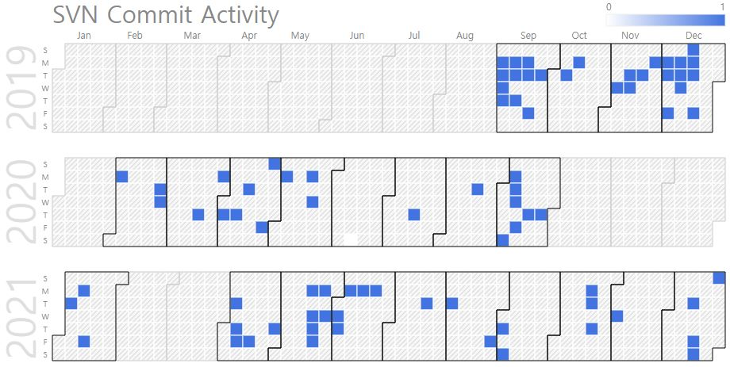

Peter Plesznik (M.S., Researcher in Silicon Labs Hungary)
|  | M.S. Candidate. |
Repository Commit History
|  |
Introduction
Full Bio Sketch
Mr. Plesznik received his B.S. degree in Electrical Engineering at Budapest University of Technology and Economics, Budapest, Hungary in 2017, and his M.S degree in Electronics Engineering at Kyungpook National University, Daegu, Republic of Korea in 2021. His research interests include the FPGA based signal processing. Currently, he is focusing on sliding DFT applications in low-power DSP microcontrollers.
Research Topic
 Fourier transform is one of the most commonly used signal processing tools. For real time processing, the Recursive Discrete Fourier Transform (RDFT) is a possbile solution. The goal of the research is to create a high speed hardware for the observer based RDFT (oRDFT) structure implemented in FPGA. First theoretical simulation is done, imitating the operation of the FPGA, to be able to predict the accuracy and behaviour of the structure. Then, the structure is implemented in HDL, with the goal of maximal processing speed optimized for the given FPGA. Also, the combination of the two existing oRDFT structures for increased accuracy is investigated. The expected result is, that in the case of sliding window transformation, the RDFT will be able to produce results faster, than the optimized FFT structure.
Fourier transform is one of the most commonly used signal processing tools. For real time processing, the Recursive Discrete Fourier Transform (RDFT) is a possbile solution. The goal of the research is to create a high speed hardware for the observer based RDFT (oRDFT) structure implemented in FPGA. First theoretical simulation is done, imitating the operation of the FPGA, to be able to predict the accuracy and behaviour of the structure. Then, the structure is implemented in HDL, with the goal of maximal processing speed optimized for the given FPGA. Also, the combination of the two existing oRDFT structures for increased accuracy is investigated. The expected result is, that in the case of sliding window transformation, the RDFT will be able to produce results faster, than the optimized FFT structure.
Publications
Journal Publications (SCI 1)
P´eter Plesznik, Zsolt Koll´ar, and Daejin Park. FPGA Optimized Realization of the Observer-Based Sliding Discrete Fourier Transform IEEE Access, 2022
Conference Publications (Intl. 1)
D. Lee, M. Kang, P. Plesznik, J. Cho, and D. Park. Scrambling Technique of Instruction Power Consumption for Side-Channel Attack Protection In 2020 International Conference on Electronics, Information, and Communication (ICEIC), pages 1-2, 2020.
Participation in International Conference
IEEE ICEIC 2020, Spain